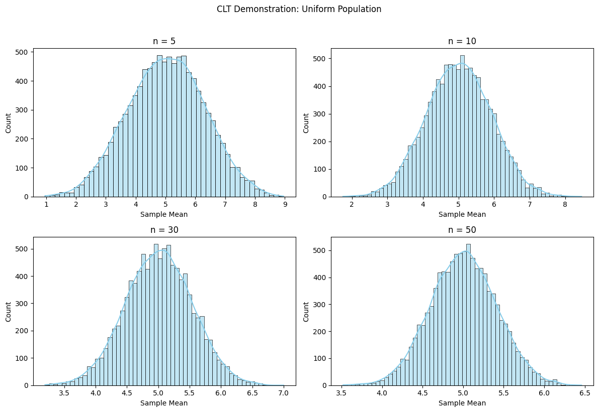
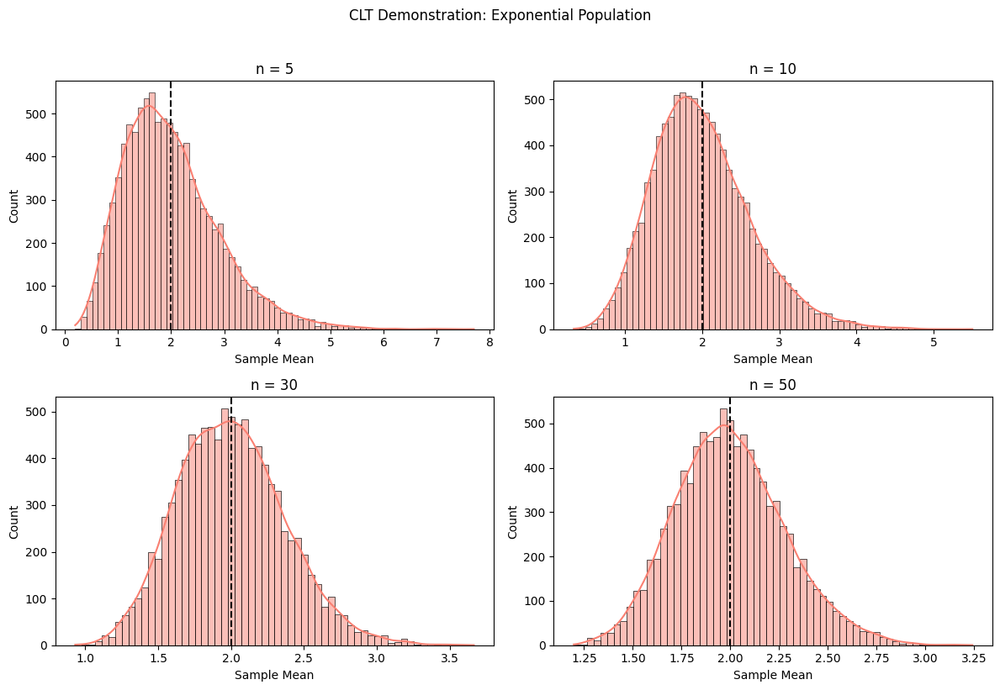
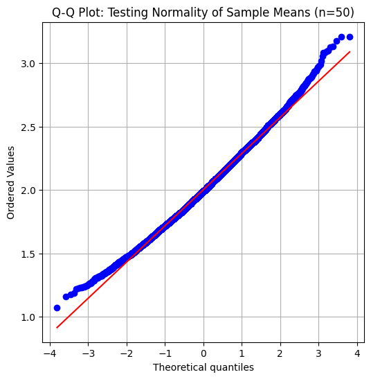

Problem 1
1. Theoretical Foundation of the Central Limit Theorem (CLT)
The Central Limit Theorem (CLT) is a fundamental concept in probability theory and statistics, stating that:
"Given a sufficiently large sample size n, the sampling distribution of the sample mean \(\overline{X}\) will approximate a normal distribution, regardless of the population's original distribution."
Mathematical Formulation
For a population with:
-
Mean \(\mu\)
-
Variance \(\sigma^2\)
The sampling distribution of the sample mean \(\overline{X}\) will have:
Mean: \(\mu_{\overline{X}} = \mu\)
Standard Error (SE): \(\sigma_{\overline{X}} = \frac{\sigma}{\sqrt{n}}\)
As \(n→∞\) , the distribution of \(\overline{X}\) converges to:
2. Simulation Methodology
Step 1: Define Population Distributions
We examine three distinct distributions:
Uniform Distribution
-
\(\text{Mean: } \mu = \frac{a+b}{2}\)
-
Variance: \(\sigma^2 = \frac{(b-a)^2}{12}\)
Exponential Distribution
-
\(\text{Mean: } \mu = \frac{1}{\lambda}\)
-
\(\text{Variance: } \sigma^2 = \frac{1}{\lambda^2}\)
Binomial Distribution
-
\(\text{Mean: } \mu = np\)
-
\(\text{Variance: } \sigma^2 = np(1-p)\)
Step 2: Generate Sampling Distributions
For each population:
Draw \(k\) random samples of size \(n\).
Compute the sample mean \(\overline{X}\) for each sample.
\(\text{Repeat for increasing } n \text{ (e.g., } n=5, 10, 30, 50)\)
Step 3: Analyze Convergence to Normality
For small \(n\), the sampling distribution resembles the population.
For large \(n\), it converges to a Gaussian distribution.
Key Observations
\((A)\) Impact of Sample Size \((n)\)
- Small n (e.g., 5):
Sampling distribution retains shape of the population.
Exponential → Right-skewed, Binomial → Discrete.
- Large n (e.g., 50):
All distributions converge to a symmetric bell curve.
(B) Role of Population Variance \(({\sigma^2})\)
Higher variance widens the sampling distribution:
\(\text{Uniform (low } \sigma^2 \text{): Faster convergence.}\)
\(\text{Exponential (high } \sigma^2 \text{): Requires larger } n\)
Practical Applications of CLT
(1) Estimating Population Parameters
-
Example: Polling (sample mean \(\overline{X}\) approximates \(μ\)).
-
Confidence Intervals:
(2)Quality Control (Manufacturing)
- Control Charts: Monitor if process means remain within \(\mu \pm 3 \frac{\sigma}{\sqrt{n}}\)
(3) Financial Risk Modeling
- Portfolio Returns: Sum of asset returns → Normal distribution (CLT).
Limitations and Extensions
When CLT Fails
-
Heavy-Tailed Distributions (e.g., Cauchy): No finite variance → No CLT.
-
Extremely Small n: Non-normal sampling distribution.
Advanced Considerations
-
Berry-Esseen Theorem: Quantifies convergence speed.
-
Multivariate CLT: Extends to vector-valued distributions.
Visualizing the CLT (Conceptual Plots)
Expected Simulation Outputs
Histograms of \(\overline{X}\) for Increasing n
-
Left: Original population (e.g., exponential).
-
Right: Sampling distribution (becoming Gaussian).
Q-Q Plots
Confirms normality by comparing quantiles to \(N(0,1)\)
Convergence Animation
- Dynamic plot showing distribution evolving with \(n\).
Conclusion
The CLT bridges theory and practice, enabling:
-
Reliable inference from samples.
-
Simplified modeling of complex systems.
-
Robust decision-making in uncertain environments.
Graphic Examples
Convergence of Sample Means (Uniform Distribution)

CLT for Skewed Data (Exponential Distribution)

Q-Q Plot for Normality Check
